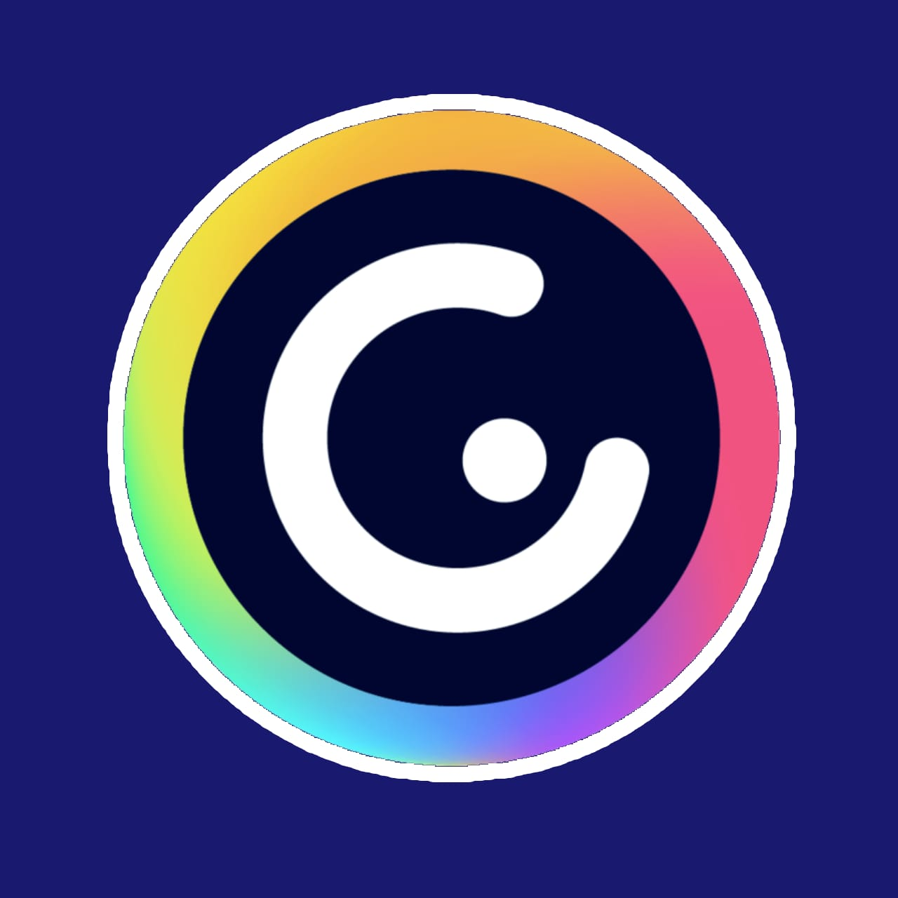
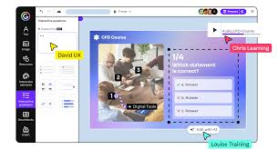

˗ˏˋ ¿Qué es Genially? ˎˊ˗
(ㅅ´ ˘ `) Plataforma en linea para crear contenido interactivo y visual como presentaciones, infografias, juegos y mas. Ofrece una variedad de plantillas y herramientas para personalizar y compartir contenido de manera atractiva y dinamica.

˗ˏˋ ¿Para qué sirve? ˎˊ˗
(ㅅ´ ˘ `) Sirve para crear presentaciones interactivas, diseñar infografias y graficos, desarrollar juegos y actividades educativas y compartir contenido de manera atractiva y dinamica.
˗ˏˋ ¿Cómo lo puedo utilizar? ˎˊ˗
(ㅅ´ ˘ `) 1-Creando una cuenta y accede a la plataforma. 2.elige una plantilla o comienza desde cero. 3. personaliza con texto, imagenes o elementos. 4.agrega animaciones y efectos. 5,comparte tu creacion en linea o descarga en diferentes formatos.

˗ˏˋ ¿Quién lo creó? ˎˊ˗
(ㅅ´ ˘ `) Juan rubio y alvaro saavedra, la empresa se fundo en 2015 en malaga españa.
˗ˏˋ ¿Cómo ha ayudado a la comunidad digital? ˎˊ˗
(ㅅ´ ˘ `) facilitando la creacion de contenido y visual, formentando la innovacion en educacion y marketing, ofrece herramientas para mejorar la participacion y el compromiso en linea.
˗ˏˋ ¿Qué la diferencia de las demás aplicaciones? ˎˊ˗
(ㅅ´ ˘ `) Se diferencia de la interactividad y animaciones avanzadas, variedad de plantillas y elementos personalizables, facil de usar y compartir contenido dinamico y integracion con redes sociales y plataformas educativas
 ← Volver a la página principal
← Volver a la página principal